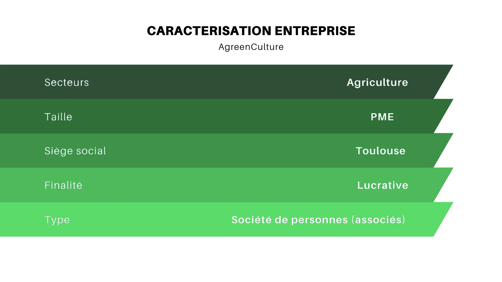
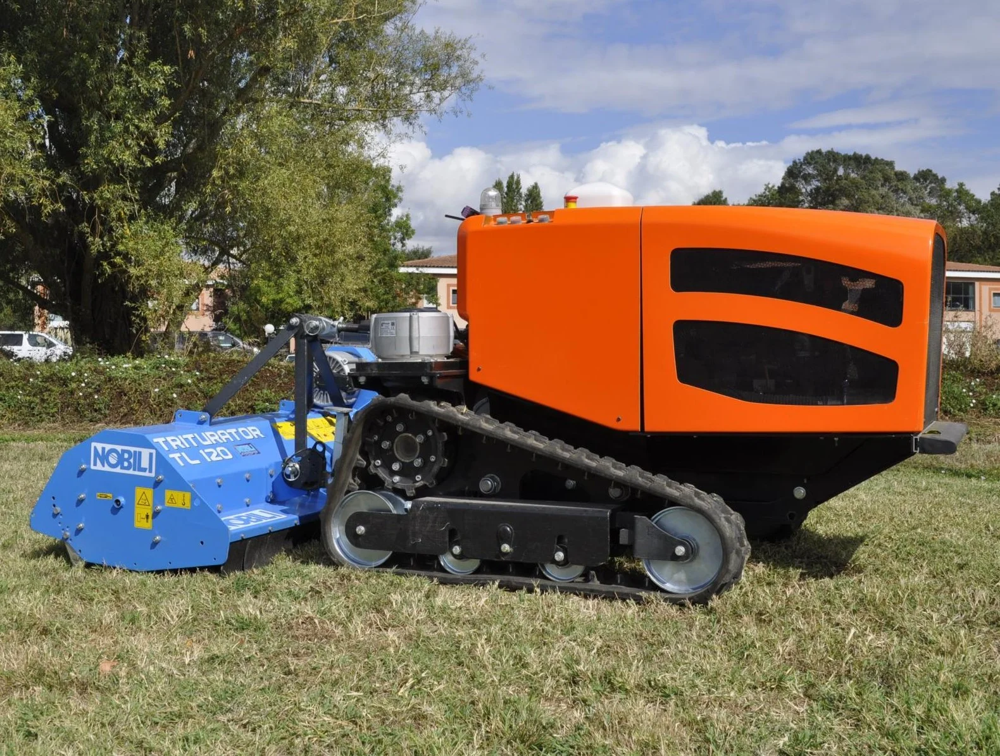
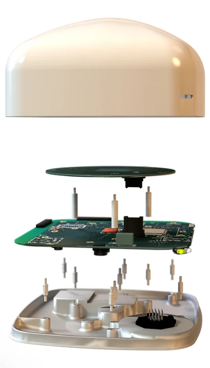
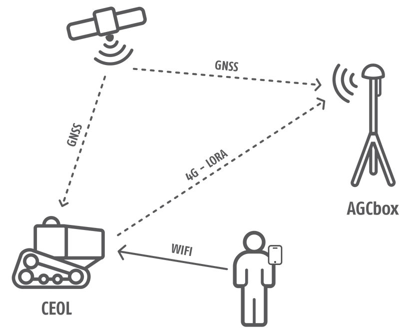

Projet : CENTEOL | Faites de la smart-agriculture votre force !
L’entreprise
Depuis 2017, AgreenCulture réalise et fabrique des robots agricoles qui offre l'avantage de
l'écologie à bas prix. Elle propose un nouveau modèle de robot agricole
autonome et connecté. Ce nouveau robot permet notamment de réduire la pulvérisation de pesticides.
Les enjeux
-
Assurer la viabilité de la production alimentaire et mettre en œuvre des
pratiques agricoles résilientes tout en réduisant l’usage de de produits chimiques.
-
Réduire le nombre de décès et de maladies dus à l’usage de substances chimiques,
à la pollution, à la contamination de l’air, de l’eau et des sols.

Le projet
AgreenCulture a mis au point un robot, réalisant des tâches agricoles sur de
très grands espaces et doté d’une technologie de géopositionnement de très
haute précision. Equipé d'outils recourant à l’intelligence artificielle
, il analyse son environnement afin de réduire
les ajouts chimiques dans les champs et favoriser les alternatives
écologiques et responsables.
Quelques chiffres
En 2018, AgreenCulture a réalisé un chiffre d'affaires de 600 000€
contre 60 000€ en 2017. De plus l'entreprise emploie aujourd'hui plus de 50 personnes.
Produits
* Cliquer pour ZOOMER
Céol

Céol, à la différence des autres robots, fonctionne avec un moteur
thermique. Ce choix technologique permet à AgreenCulture de proposer un robot
compact au prix d’un tracteur interligne classique de moyenne gamme.
Le robot peut utiliser des outils mécaniques, électriques
mais aussi des équipements hydraulique. L'autonomie de ce robot est
comprise entre 10 et 14 heures.
AGC Box


L’AGC Box sert à numériser votre parcelle en vue d’y faire travailler des robots autonomes.
Le boîtier guide le robot et lui donne la meilleure trajectoire pour éviter les obstacles.